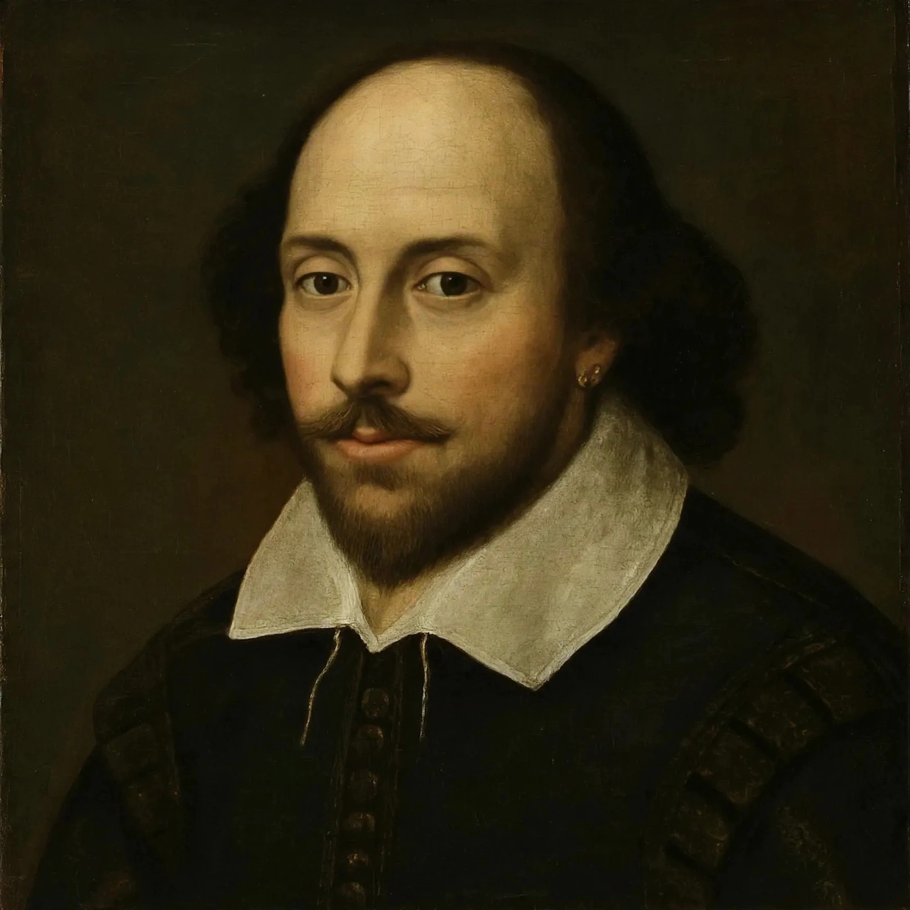

William Shakespeare
| William Shakespeare | |
|---|---|
| Born | Baptised 26 April 1564, Stratford-upon-Avon, England |
| Died | 23 April 1616 (aged 52), Stratford-upon-Avon |
| Occupation | Playwright, poet, actor |
| Known for | Plays including Hamlet, Macbeth, Romeo and Juliet, Othello, King Lear; 154 sonnets |
| Spouse | Anne Hathaway |
William Shakespeare (baptised 26 April 1564 – 23 April 1616) was an English playwright, poet and actor, widely regarded as the greatest writer in the English language and the world's pre-eminent dramatist. He is often called England's national poet and the "Bard of Avon". His extant works, including collaborations, consist of some 39 plays, 154 sonnets, three long narrative poems and a few other verses. His plays have been translated into every major living language and are performed more often than those of any other playwright.

Life
Shakespeare was born and raised in Stratford-upon-Avon, Warwickshire, the son of John Shakespeare, a glove-maker and alderman, and Mary Arden. At 18 he married Anne Hathaway, with whom he had three children: Susanna and twins Hamnet and Judith. Between 1585 and 1592 he began a successful career in London as an actor, writer and part-owner of the Lord Chamberlain's Men (later the King's Men), the company that built the Globe Theatre. He retired to Stratford around 1613 and died three years later. Few personal records survive, which has fuelled speculation about his identity and occasional — though fringe — doubts about his authorship.
Works
Shakespeare's early plays were mainly comedies and histories, including A Midsummer Night's Dream, Much Ado About Nothing, Henry IV and Richard III. He then wrote chiefly tragedies until about 1608: Hamlet, Othello, King Lear and Macbeth are considered among the finest works in English literature. In his last phase he wrote tragicomedies, or romances, such as The Tempest and The Winter's Tale. His narrative poems Venus and Adonis and The Rape of Lucrece were published when plague closed the theatres in the 1590s, and his sonnets appeared in 1609.
Style and influence
Shakespeare wrote mostly in blank verse — unrhymed iambic pentameter — enlivened by prose passages and a vast, inventive vocabulary; he is credited with coining or popularising hundreds of words and phrases still in use. His plays explore ambition, jealousy, love, power and betrayal with psychological depth that has kept them alive in performance for four centuries. The First Folio of 1623, published by his fellow actors John Heminges and Henry Condell, preserved 36 of the plays, half of which might otherwise have been lost.